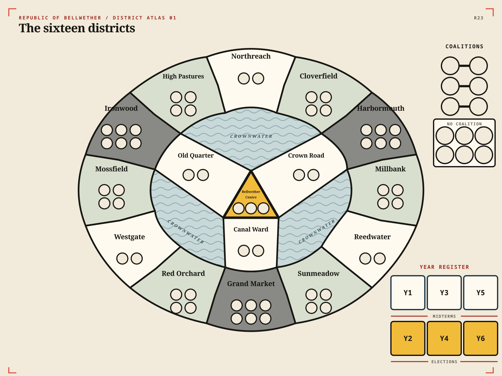

A connected district map holds limited Support spots. Six animal political parties are the ordinary influence targets, while the Press Perch holds their persistent media Pecking Order and may itself host a contest.
Current board role
- Give every party a unique, readable identity and two favored-operation bonus icons.
- Show connected political districts, their limited Support spots, and every party’s public Support.
- Show each party’s directional overture and any reciprocal coalition.
- Provide one public location for each opening influence contest and its ranked bids.
- List every party in a persistent Pecking Order at the Press Perch.
- Allow the Press Perch itself to receive a contest and resolve it first.
- Swap one adjacent pair in the Pecking Order for each operative executed at the Press Perch.
- Use the same fixed starting order in every first-prototype session.
Party targets
| Party | Animals | Favored operations | Organizational identity |
|---|---|---|---|
| Honeycomb Cooperative | Bees | Organise and Rally | Connected grassroots organization |
| Old Shell Union | Tortoises | Smear and Court | Durable opposition and alliances |
| Foxglove League | Foxes | Organise and Smear | Global mobility and opportunistic conversion |
| Riverworks Party | Beavers | Rally and Smear | Connected growth and attrition |
| Many Wings Coalition | Starlings | Organise and Court | Numerous local groups and alliances |
| Night Parliament | Owls | Rally and Court | Debates, endorsements, and timing |
The names, animals, favored-operation pairs, and all twelve party bonuses are rules. Each displayed operation receives one independently claimable party bonus during that party’s influence contest.
Party state
Each party has public Support on the district map, a public Support reserve, and one directional overture that may point toward another party. Reciprocal overtures form a coalition. Old Shell’s Court bonus may reinforce its overture with a Shell marker. Night Parliament may hold delayed Rally and Court bonuses until ordinary operative resolution ends. Exact Support quantities, starting positions, starting overtures—including whether any begin unpointed—and coalition consequences remain unresolved.
District map
The first prototype uses sixteen named districts in a ring-and-cross layout. Twelve districts form the outer land ring. Bellwether Centre connects through Crown Road, Canal Ward, and Old Quarter to Northreach, Reedwater, and Westgate. Districts are neighboring when they share a black border segment; meeting only at a point or across Crownwater does not make them neighbors.

The grey districts—Harbormouth, Grand Market, and Ironwood—hold six Support each. Their six ring neighbors hold four each. Bellwether Centre holds three. Northreach, Reedwater, Westgate, and the three causeway districts hold two each. The complete map has fifty-seven Support spots and eighteen shared borders.
District reference
| District | Support spots | Neighboring districts |
|---|---|---|
| Northreach | 2 | High Pastures, Cloverfield, Crown Road |
| Cloverfield | 4 | Northreach, Harbormouth |
| Harbormouth | 6 | Cloverfield, Millbank |
| Millbank | 4 | Harbormouth, Reedwater |
| Reedwater | 2 | Millbank, Sunmeadow, Canal Ward |
| Sunmeadow | 4 | Reedwater, Grand Market |
| Grand Market | 6 | Sunmeadow, Red Orchard |
| Red Orchard | 4 | Grand Market, Westgate |
| Westgate | 2 | Red Orchard, Mossfield, Old Quarter |
| Mossfield | 4 | Westgate, Ironwood |
| Ironwood | 6 | Mossfield, High Pastures |
| High Pastures | 4 | Ironwood, Northreach |
| Crown Road | 2 | Northreach, Bellwether Centre |
| Canal Ward | 2 | Reedwater, Bellwether Centre |
| Old Quarter | 2 | Westgate, Bellwether Centre |
| Bellwether Centre | 3 | Crown Road, Canal Ward, Old Quarter |
Still open: total Support supply, starting occupation, and whether the capacity pattern needs adjustment after play.
The earlier node-map presentation is archived; its topology and capacities remain current.
Initial board questions
- What information must be shared and ordered?
- Does one ladder hold all players, or does each player have one?
- Are rungs exclusive, shared, or capacity-limited?
- Does position show progress, privilege, risk, price, or turn order?
- Can the same information live on cards or a small track?
Initial ladder sketch
Draw six ordered spaces on one sheet of paper. Number them from bottom to top, leave room for every player marker on every space, and add no printed effects.
Reason: six spaces are enough to create relative position without making track length the main balance decision.
Superseded specification
- Every space had a unique, readable identifier.
- Player markers remained distinguishable when sharing a space.
- The direction of movement read from every seat.
- Triggered effects were printed where they occurred.
- The board showed state rather than rules players had to memorize.
| Property | Former value | Former evidence need |
|---|---|---|
| Number of ladders | Superseded by target areas and one ordered list | None; retained as design history |
| Rungs per ladder | Six for the first sketch only | Observed movement range |
| Rung capacity | Unresolved | Interaction test |
| Board size | One sheet of paper | Fit target areas, bid containers, and a readable ordered list |
Specification checklist
- Every party has a unique name, animal identity, and pair of favored-operation bonus icons.
- Every district has a unique name, readable shared borders, and a fixed number of Support spots.
- Party Support, free spots, overtures, coalitions, Old Shell’s reinforcement, and claimed Night Parliament delays remain visible from every seat.
- Opening bids and counterbid locations remain readable around every party.
- The Pecking Order and direction of resolution read from every seat.
- The Press Perch is visibly distinct from the six parties.
- Any triggered effect is printed where it occurs.
- The board shows state, not rules players must memorize.
Open measurements
| Property | Current value | Evidence needed |
|---|---|---|
| Contest targets | Six plus the Press Perch | Test whether six parties spread four opening contests too thinly |
| Pecking Order positions | One per party | Verify that adjacent swaps materially change plans |
| Party state areas | Support reserve, one overture, and bonus text | Fit all bonus text, delayed-bonus state, and eventual election outcomes |
| District map | Sixteen named districts, eighteen shared borders, and fifty-seven Support spots in the territorial prototype | Test whether the 6/4/3/2 capacity pattern creates useful vacancies and whether movement through the Crownwater causeways is valuable |
| Board size | One sheet of paper | Fit the district map, seven contest areas, bid containers, party state, and a readable Pecking Order |